Posterior-weighted 2D regression¶
weighted_regression_2d fits a straight, constant-velocity trajectory to a
posterior probability array with shape (x, y, time). It returns
r2, x_traj, y_traj, slope_x, slope_y, mean_x, mean_y.
The fit minimizes posterior-weighted squared Euclidean residuals: $\hat{\mathbf p}(t)=\bar{\mathbf p}+\mathbf b(t-\bar t)$. The variance-weighted multivariate coefficient of determination is
$$R^2=1-\frac{\mathrm{SSE}}{\mathrm{SST}} =\frac{\operatorname{Cov}_w(X,T)^2+\operatorname{Cov}_w(Y,T)^2} {\operatorname{Var}_w(T)[\operatorname{Var}_w(X)+\operatorname{Var}_w(Y)]}.$$
The first returned value is R², the fraction of total spatial variance explained by the fitted line, in [0,1]. It is unsigned. Slopes encode direction; the last two outputs are spatial means, not regression intercepts. The fitted trajectory is distinct from the posterior center of mass.
Use the same physical units for x and y for rotation invariance. Normalize each time slice to one for equal temporal weighting. Synthetic examples below need no external data; the final real-data workflow is optional.
Reading guide¶
The simulations vary one aspect at a time:
- Direction: establish that the fit is independent of trajectory angle.
- Uncertainty: keep ordered movement and increase posterior spread or noise.
- Negative controls: remove ordered movement and compare with signal plus noise.
- Model limitations: introduce curvature and repeated jumps.
Every example includes the same 500-shuffle test. Read R² as fit magnitude and the p-value as evidence relative to the specified null. Helper definitions come first; optional edge cases, timing, and real data follow the main sequence.
import matplotlib
import matplotlib.cm as mpl_cm
import matplotlib.colors as colors
import matplotlib.pyplot as plt
import nelpy as nel
import numpy as np
import pandas as pd
import neuro_py as npy
from neuro_py.ensemble.replay import weighted_regression_2d
R² magnitude and shuffle significance¶
R² describes explained spatial variance; its size alone does not establish whether an event is unusual under a null model. A diffuse linear posterior can explain little total variance yet have more temporal structure than its shuffles. Each simulation below includes an observed-versus-null histogram.
The self-contained helper reproduces hpc_ctx.replay.replay_2d's
axis_wise_toroidal method: independently translate each spatial posterior
by random x/y offsets, wrapping at the arena boundaries. This preserves
per-bin probability values, total mass, and shape on the torus while
disrupting the spatial alignment between time bins.
We use 500 shuffles and a fixed seed. The upper-tail Monte Carlo p-value
is (1 + number of shuffled R² >= observed R²) / (1 + n_shuffles), including
ties. Its minimum is 1/501 (approximately 0.002). The dashed line marks the
null 95th percentile; p-values provide the decision rule at the chosen alpha.
These are illustrative, unadjusted per-simulation p-values under this specific null, not proof of biological replay. Toroidal shifts assume a wraparound geometry, and independent bin shifts remove temporal dependence. Real arena boundaries and overlapping decode windows still require separate null calibration. The simulated posteriors here do not use overlapping spike count windows.
N_SHUFFLES = 500
SHUFFLE_SEED = 42
def toroidal_spatial_shuffle(posterior, x_shifts, y_shifts):
"""Translate each spatial posterior independently on a 2D torus."""
shuffled = np.empty_like(posterior)
for k in range(posterior.shape[2]):
shuffled[:, :, k] = np.roll(
posterior[:, :, k], shift=(x_shifts[k], y_shifts[k]), axis=(0, 1)
)
return shuffled
def r2_shuffle_test(posterior, n_shuffles=N_SHUFFLES, seed=SHUFFLE_SEED):
"""Return observed R², the spatial null, and its upper-tail Monte Carlo p."""
if not isinstance(n_shuffles, (int, np.integer)) or n_shuffles < 1:
raise ValueError("n_shuffles must be a positive integer")
observed = weighted_regression_2d(posterior)[0]
rng = np.random.default_rng(seed)
nx, ny, nt = posterior.shape
null = np.empty(n_shuffles)
for b in range(n_shuffles):
x_shifts = rng.integers(0, nx, size=nt)
y_shifts = rng.integers(0, ny, size=nt)
null[b] = weighted_regression_2d(
toroidal_spatial_shuffle(posterior, x_shifts, y_shifts)
)[0]
if not np.isfinite(observed) or not np.all(np.isfinite(null)):
raise ValueError("Observed and shuffled R² must be finite for this test")
p_value = (1 + np.count_nonzero(null >= observed)) / (n_shuffles + 1)
return observed, null, p_value
def plot_r2_nulls(simulations, n_shuffles=N_SHUFFLES, seed=SHUFFLE_SEED):
"""Plot each simulation against its null and return a numeric summary."""
ncols = min(3, len(simulations))
nrows = (len(simulations) + ncols - 1) // ncols
fig, axes = plt.subplots(
nrows,
ncols,
figsize=(4.3 * ncols, 3.2 * nrows),
squeeze=False,
constrained_layout=True,
)
streams = np.random.SeedSequence(seed).spawn(len(simulations))
rows = []
for ax, (name, posterior), stream in zip(axes.flat, simulations.items(), streams):
observed, null, p_value = r2_shuffle_test(posterior, n_shuffles, stream)
q95 = np.quantile(null, 0.95)
ax.hist(
null, bins=30, color="steelblue", alpha=0.8, label="Toroidal spatial null"
)
ax.axvline(q95, color="0.25", ls="--", lw=1.4, label="Null 95th percentile")
ax.axvline(observed, color="crimson", lw=2, label="Observed R²")
upper = max(observed, null.max())
ax.set(
title=f"{name}\nR² = {observed:.4f}; p = {p_value:.4f}",
xlabel="R²",
ylabel="Shuffle count",
xlim=(0, 1.06 * upper if upper > 0 else 0.01),
)
ax.legend(fontsize=7)
rows.append(
{
"simulation": name,
"observed_r2": observed,
"null_95th_percentile": q95,
"p_value": p_value,
"n_shuffles": n_shuffles,
}
)
for ax in axes.flat[len(simulations) :]:
ax.set_visible(False)
plt.show()
return pd.DataFrame(rows).set_index("simulation")
Simulation setup¶
All helpers normalize each spatial slice to total probability one, so every decode bin receives equal weight. Noise seeds are fixed for reproducibility. The finite-uncertainty angle and spread comparisons match speeds and avoid arena edges.
def simulate_degenerate_x(t_dim=20, x_fixed=5, noise=0.01):
"""All weight on a single x row — trajectory moves only in Y."""
rng = np.random.default_rng(42)
x_dim, y_dim = 10, 10
weights = np.zeros((x_dim, y_dim, t_dim), dtype=np.float64)
for k in range(t_dim):
cy = k / (t_dim - 1) * (y_dim - 1)
for j in range(y_dim):
weights[x_fixed, j, k] = np.exp(-((j - cy) ** 2) / 4.0)
weights[x_fixed] += rng.uniform(0, noise, (y_dim, t_dim))
return weights / weights.sum(axis=(0, 1), keepdims=True)
def simulate_degenerate_y(t_dim=20, y_fixed=5, noise=0.01):
"""All weight on a single y column — trajectory moves only in X."""
rng = np.random.default_rng(42)
x_dim, y_dim = 10, 10
weights = np.zeros((x_dim, y_dim, t_dim), dtype=np.float64)
for k in range(t_dim):
cx = k / (t_dim - 1) * (x_dim - 1)
for i in range(x_dim):
weights[i, y_fixed, k] = np.exp(-((i - cx) ** 2) / 4.0)
weights[:, y_fixed, :] += rng.uniform(0, noise, (x_dim, t_dim))
return weights / weights.sum(axis=(0, 1), keepdims=True)
def simulate_no_movement(t_dim=20, noise=0.01):
"""Weight fixed at a single spatial location — no temporal drift."""
rng = np.random.default_rng(42)
x_dim, y_dim = 10, 10
weights = np.zeros((x_dim, y_dim, t_dim), dtype=np.float64)
weights[5, 5, :] = 1.0
weights += rng.uniform(0, noise, (x_dim, y_dim, t_dim))
return weights / weights.sum(axis=(0, 1), keepdims=True)
def simulate_both_axes(t_dim=20, noise=0.01):
"""Weight drifts diagonally — both X and Y move over time."""
rng = np.random.default_rng(42)
x_dim, y_dim = 10, 10
weights = np.zeros((x_dim, y_dim, t_dim), dtype=np.float64)
for k in range(t_dim):
cx = k / (t_dim - 1) * (x_dim - 1)
cy = k / (t_dim - 1) * (y_dim - 1)
for i in range(x_dim):
for j in range(y_dim):
weights[i, j, k] = np.exp(-((i - cx) ** 2 + (j - cy) ** 2) / 4.0)
weights += rng.uniform(0, noise, weights.shape)
return weights / weights.sum(axis=(0, 1), keepdims=True)
def simulate_anti_diagonal(t_dim=20, noise=0.01):
"""Weight drifts along an anti-diagonal — both X and Y move over time."""
rng = np.random.default_rng(42)
x_dim, y_dim = 10, 10
weights = np.zeros((x_dim, y_dim, t_dim), dtype=np.float64)
for k in range(t_dim):
cx = k / (t_dim - 1) * (x_dim - 1)
cy = (y_dim - 1) - k / (t_dim - 1) * (y_dim - 1)
for i in range(x_dim):
for j in range(y_dim):
weights[i, j, k] = np.exp(-((i - cx) ** 2 + (j - cy) ** 2) / 4.0)
weights += rng.uniform(0, noise, weights.shape)
return weights / weights.sum(axis=(0, 1), keepdims=True)
def simulate_curved(t_dim=20, noise=0.05):
"""Trajectory follows a curved arc (sine wave in Y)."""
rng = np.random.default_rng(42)
x_dim, y_dim = 10, 10
weights = np.zeros((x_dim, y_dim, t_dim), dtype=np.float64)
for k in range(t_dim):
cx = k / (t_dim - 1) * (x_dim - 1)
cy = 4.5 + 4.0 * np.sin(np.pi * k / (t_dim - 1)) # arc from 4.5 -> peak -> 4.5
for i in range(x_dim):
for j in range(y_dim):
weights[i, j, k] = np.exp(-((i - cx) ** 2 + (j - cy) ** 2) / 2.0)
weights += rng.uniform(0, noise, weights.shape)
return weights / weights.sum(axis=(0, 1), keepdims=True)
def simulate_noisy_linear(t_dim=20, noise=0.15):
"""Linear trajectory with substantial noise — realistic decode uncertainty."""
rng = np.random.default_rng(42)
x_dim, y_dim = 10, 10
weights = np.zeros((x_dim, y_dim, t_dim), dtype=np.float64)
for k in range(t_dim):
cx = k / (t_dim - 1) * (x_dim - 1)
cy = k / (t_dim - 1) * (y_dim - 1)
for i in range(x_dim):
for j in range(y_dim):
weights[i, j, k] = np.exp(-((i - cx) ** 2 + (j - cy) ** 2) / 4.0)
weights += rng.uniform(0, noise, weights.shape)
return weights / weights.sum(axis=(0, 1), keepdims=True)
def simulate_reverse(t_dim=20, noise=0.01):
"""Trajectory moves from high to low — tests signed slopes with unsigned R²."""
rng = np.random.default_rng(42)
x_dim, y_dim = 10, 10
weights = np.zeros((x_dim, y_dim, t_dim), dtype=np.float64)
for k in range(t_dim):
cx = (x_dim - 1) - k / (t_dim - 1) * (x_dim - 1) # 9 -> 0
cy = (y_dim - 1) - k / (t_dim - 1) * (y_dim - 1) # 9 -> 0
for i in range(x_dim):
for j in range(y_dim):
weights[i, j, k] = np.exp(-((i - cx) ** 2 + (j - cy) ** 2) / 4.0)
weights += rng.uniform(0, noise, weights.shape)
return weights / weights.sum(axis=(0, 1), keepdims=True)
def simulate_fragmented(t_dim=20, noise=0.05):
"""Weight jumps between two spatial clusters — fragmented/ambiguous replay."""
rng = np.random.default_rng(42)
x_dim, y_dim = 10, 10
weights = np.zeros((x_dim, y_dim, t_dim), dtype=np.float64)
for k in range(t_dim):
# Alternate between two clusters
if k % 4 < 2:
cx, cy = 2.0, 2.0
else:
cx, cy = 7.0, 7.0
for i in range(x_dim):
for j in range(y_dim):
weights[i, j, k] = np.exp(-((i - cx) ** 2 + (j - cy) ** 2) / 2.0)
weights += rng.uniform(0, noise, weights.shape)
return weights / weights.sum(axis=(0, 1), keepdims=True)
def simulate_noise_only(t_dim=20, seed=42):
"""Independent background noise with no moving spatial signal."""
rng = np.random.default_rng(seed)
weights = rng.uniform(0, 0.50, (10, 10, t_dim))
return weights / weights.sum(axis=(0, 1), keepdims=True)
def helper_plot(weights):
fig, ax = plt.subplots(1, weights.shape[2], figsize=(20, 2))
vmax = np.percentile(weights, 99.9)
for i in range(weights.shape[2]):
ax[i].imshow(
weights[..., i].T, origin="lower", aspect="equal", vmin=0, vmax=vmax
)
ax[i].set_title(f"t={i}")
plt.show()
def equal_speed_posterior(dx, dy, spread=1):
posterior = np.zeros((65, 65, 9))
offsets = np.arange(-2, 3)
mass = np.exp(-(offsets**2) / (2 * spread**2))
mass /= mass.sum()
for k in range(9):
posterior[np.ix_(10 + dx * k + offsets, 10 + dy * k + offsets, [k])] = (
mass[:, None] * mass[None, :]
)[..., None]
return posterior
1. Direction: establish the baseline¶
1.1 Perfectly localized straight motion¶
Start with no spatial uncertainty. Diagonal, anti-diagonal, and reversed paths all have R² = 1; direction is represented by the signed slopes.
n = 9
diagonal = np.zeros((n, n, n))
diagonal[np.arange(n), np.arange(n), np.arange(n)] = 1
examples = {
"Diagonal": diagonal,
"Anti-diagonal": diagonal[:, ::-1, :],
"Reverse diagonal": diagonal[..., ::-1],
}
rows = []
fig, axes = plt.subplots(1, 3, figsize=(10, 3.4), constrained_layout=True)
for ax, (name, posterior) in zip(axes, examples.items()):
r2, x_fit, y_fit, vx, vy, mx, my = weighted_regression_2d(posterior)
rows.append({"trajectory": name, "R²": r2, "slope_x": vx, "slope_y": vy})
np.testing.assert_allclose(r2, 1, atol=1e-12)
ax.scatter(x_fit, y_fit, c=np.arange(n), cmap="viridis", s=50)
ax.plot(x_fit, y_fit, color="0.5", alpha=0.5)
ax.set(title=f"{name}\nR² = {r2:.2f}", xlabel="x bin", ylabel="y bin")
ax.set_aspect("equal")
display(pd.DataFrame(rows).set_index("trajectory"))
plt.show()
display(plot_r2_nulls(examples))
| R² | slope_x | slope_y | |
|---|---|---|---|
| trajectory | |||
| Diagonal | 1.0 | 1.0 | 1.0 |
| Anti-diagonal | 1.0 | 1.0 | -1.0 |
| Reverse diagonal | 1.0 | -1.0 | -1.0 |
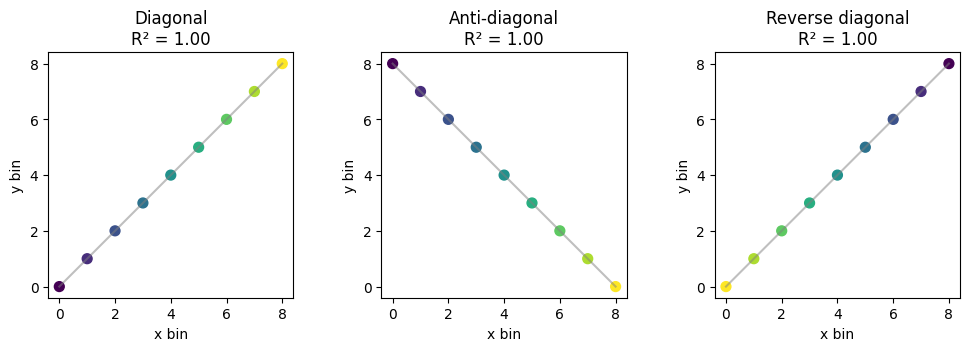
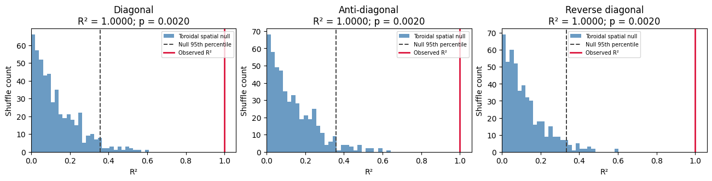
| observed_r2 | null_95th_percentile | p_value | n_shuffles | |
|---|---|---|---|---|
| simulation | ||||
| Diagonal | 1.0 | 0.358077 | 0.001996 | 500 |
| Anti-diagonal | 1.0 | 0.360742 | 0.001996 | 500 |
| Reverse diagonal | 1.0 | 0.332554 | 0.001996 | 500 |
1.2 Change direction while matching speed and uncertainty¶
Horizontal velocity (5,0) and oblique velocity (3,4) have equal magnitude. Both use the same symmetric isotropic uncertainty. Reflection changes direction without changing fit magnitude. Integer coordinates avoid spatial interpolation artifacts, and the paths stay away from arena boundaries.
horizontal = equal_speed_posterior(5, 0)
oblique = equal_speed_posterior(3, 4)
matched = {
"Horizontal": horizontal,
"Oblique": oblique,
"Reflected oblique": oblique[:, ::-1],
}
rotation_table = pd.DataFrame(
[
{"trajectory": name, "R²": weighted_regression_2d(p)[0]}
for name, p in matched.items()
]
).set_index("trajectory")
np.testing.assert_allclose(
rotation_table["R²"], rotation_table["R²"].iloc[0], atol=1e-12
)
display(rotation_table)
rotation_table.plot.bar(
rot=0, ylim=(0, 1.05), ylabel="R²", figsize=(8, 3.5), legend=False
)
plt.title("Equal R² for matched speed and spatial uncertainty")
plt.tight_layout()
plt.show()
display(plot_r2_nulls(matched))
| R² | |
|---|---|
| trajectory | |
| Horizontal | 0.98903 |
| Oblique | 0.98903 |
| Reflected oblique | 0.98903 |
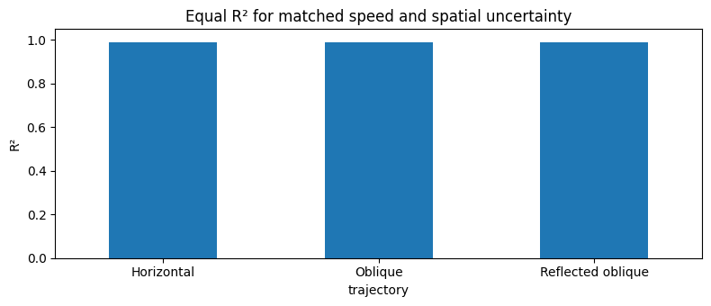
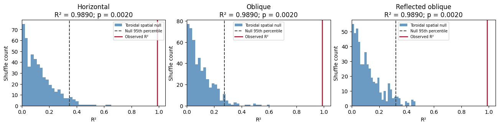
| observed_r2 | null_95th_percentile | p_value | n_shuffles | |
|---|---|---|---|---|
| simulation | ||||
| Horizontal | 0.98903 | 0.348691 | 0.001996 | 500 |
| Oblique | 0.98903 | 0.272963 | 0.001996 | 500 |
| Reflected oblique | 0.98903 | 0.322592 | 0.001996 | 500 |
2. Uncertainty: preserve the ordered trajectory¶
2.1 Broaden the spatial posterior¶
Hold the oblique trajectory fixed and vary only the spatial spread parameter. R² decreases because spatial uncertainty contributes unexplained variance. The finite spatial kernel is identical across examples except for its spread.
# Posterior spread is retained in the residual, unlike scoring only its mean.
uncertainty = pd.DataFrame(
[
{
"spread": spread,
"R²": weighted_regression_2d(equal_speed_posterior(3, 4, spread))[0],
}
for spread in (0.3, 1.0, 2.0)
]
)
assert np.all(np.diff(uncertainty["R²"]) < 0)
display(uncertainty)
display(
plot_r2_nulls(
{
f"Spatial spread {spread}": equal_speed_posterior(3, 4, spread)
for spread in (0.3, 1.0, 2.0)
}
)
)
| spread | R² | |
|---|---|---|
| 0 | 0.3 | 0.999908 |
| 1 | 1.0 | 0.989030 |
| 2 | 2.0 | 0.980429 |
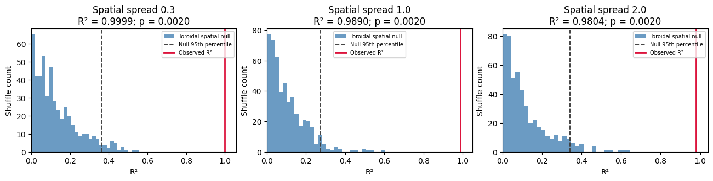
| observed_r2 | null_95th_percentile | p_value | n_shuffles | |
|---|---|---|---|---|
| simulation | ||||
| Spatial spread 0.3 | 0.999908 | 0.364154 | 0.001996 | 500 |
| Spatial spread 1.0 | 0.989030 | 0.272963 | 0.001996 | 500 |
| Spatial spread 2.0 | 0.980429 | 0.341145 | 0.001996 | 500 |
2.2 A linear trajectory with little background noise¶
This is the baseline for the next example: a moving Gaussian spatial signal plus a small background-noise component. The trajectory remains ordered.
weights = simulate_both_axes()
r2, x_traj, y_traj, slope_x, slope_y, mean_x, mean_y = weighted_regression_2d(weights)
print(f"R² : {r2:.4f}")
print(f"slope_x : {slope_x:.4f}")
print(f"slope_y : {slope_y:.4f}")
helper_plot(weights)
npy.plotting.plot_2d_replay(weights)
plt.show()
null_summary = plot_r2_nulls({"Diagonal": weights})
display(null_summary)
R² : 0.6926
slope_x : 0.3924
slope_y : 0.3921
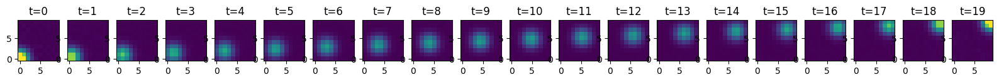

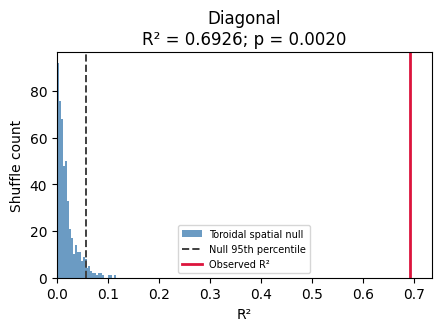
| observed_r2 | null_95th_percentile | p_value | n_shuffles | |
|---|---|---|---|---|
| simulation | ||||
| Diagonal | 0.692552 | 0.057315 | 0.001996 | 500 |
2.3 Increase background noise while retaining the signal¶
Keep the moving Gaussian signal and increase the background noise. The posterior becomes diffuse, reducing R². The histogram tests whether that remaining linear structure is unusual relative to the toroidal null. Low R² does not automatically imply nonsignificance, but it still means that much of the spatial variance is unexplained.
weights = simulate_noisy_linear(noise=0.50)
r2, x_traj, y_traj, slope_x, slope_y, mean_x, mean_y = weighted_regression_2d(weights)
print(f"R² : {r2:.4f} (lower than clean diagonal due to noise)")
print(f"slope_x : {slope_x:.4f}")
print(f"slope_y : {slope_y:.4f}")
helper_plot(weights)
npy.plotting.plot_2d_replay(weights)
plt.show()
signal_noise_summary = plot_r2_nulls({"Noisy linear": weights})
display(signal_noise_summary)
R² : 0.0517 (lower than clean diagonal due to noise)
slope_x : 0.1127
slope_y : 0.1076
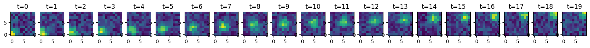
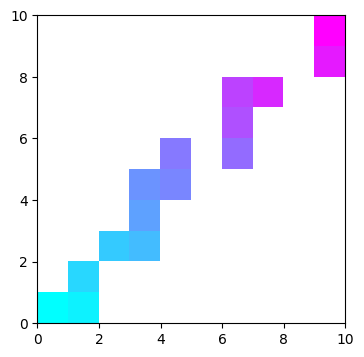
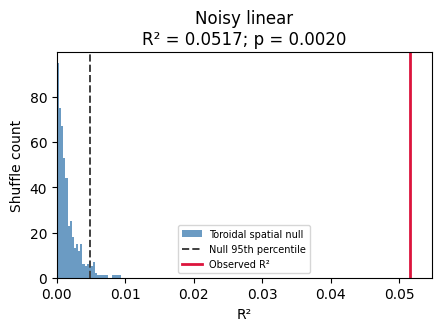
| observed_r2 | null_95th_percentile | p_value | n_shuffles | |
|---|---|---|---|---|
| simulation | ||||
| Noisy linear | 0.051652 | 0.004804 | 0.001996 | 500 |
3. Negative controls: remove ordered movement¶
3.1 Background noise alone¶
Remove the moving Gaussian signal, retaining the same fixed-seed noise component used in section 2.3 before normalization. Each time slice is an independent random spatial distribution. This is a matched signal-present versus signal-absent comparison, not just a larger noise amplitude.
With the supplied seeds, this control does not pass the 0.05 shuffle threshold. The table compares its measured p-value with the noisy linear example. Noise realizations can occasionally pass a test by chance; the seed is fixed, and the code neither searches seeds nor forces a nonsignificant result.
weights = simulate_noise_only()
r2, x_traj, y_traj, slope_x, slope_y, mean_x, mean_y = weighted_regression_2d(weights)
print(f"R²: {r2:.4f}")
helper_plot(weights)
npy.plotting.plot_2d_replay(weights)
plt.show()
noise_only_summary = plot_r2_nulls({"Noise only": weights})
display(noise_only_summary)
noise_comparison = pd.concat([signal_noise_summary, noise_only_summary])
noise_comparison["p < 0.05"] = noise_comparison["p_value"] < 0.05
display(noise_comparison)
R²: 0.0003
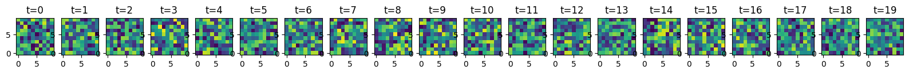
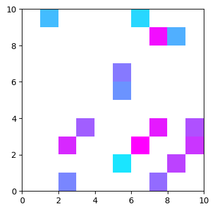
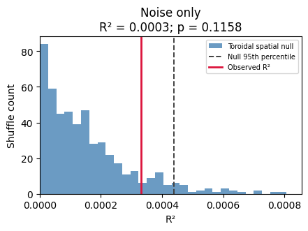
| observed_r2 | null_95th_percentile | p_value | n_shuffles | |
|---|---|---|---|---|
| simulation | ||||
| Noise only | 0.000331 | 0.00044 | 0.115768 | 500 |
| observed_r2 | null_95th_percentile | p_value | n_shuffles | p < 0.05 | |
|---|---|---|---|---|---|
| simulation | |||||
| Noisy linear | 0.051652 | 0.004804 | 0.001996 | 500 | True |
| Noise only | 0.000331 | 0.000440 | 0.115768 | 500 | False |
3.2 Spatial concentration without movement¶
A stationary spatial peak with small background noise tests a different negative control: localization alone is not evidence of a linear sequence.
weights = simulate_no_movement()
r2, x_traj, y_traj, slope_x, slope_y, mean_x, mean_y = weighted_regression_2d(weights)
print(f"R² : {r2:.4f} (expect ~0, no signal)")
print(f"slope_x : {slope_x:.3e}")
print(f"slope_y : {slope_y:.3e}")
helper_plot(weights)
npy.plotting.plot_2d_replay(weights)
plt.show()
null_summary = plot_r2_nulls({"Stationary with noise": weights})
display(null_summary)
R² : 0.0001 (expect ~0, no signal)
slope_x : 3.815e-03
slope_y : 1.324e-03
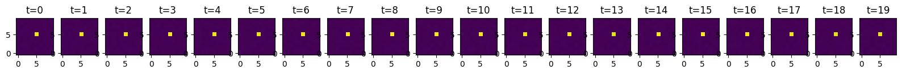

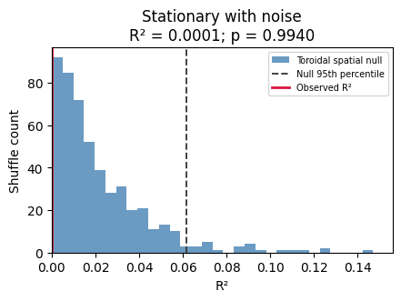
| observed_r2 | null_95th_percentile | p_value | n_shuffles | |
|---|---|---|---|---|
| simulation | ||||
| Stationary with noise | 0.000096 | 0.061809 | 0.994012 | 500 |
4. Model limitations: depart from a straight trajectory¶
4.1 Smooth curvature¶
A smooth arc contains ordered movement, but a constant-velocity line cannot explain all of it. Inspect both R² and the shuffle result: significance does not imply that the linear model describes the complete path.
weights = simulate_curved()
r2, x_traj, y_traj, slope_x, slope_y, mean_x, mean_y = weighted_regression_2d(weights)
print(f"R² : {r2:.4f} (attenuated vs diagonal — nonlinear Y)")
print(f"slope_x : {slope_x:.4f} (X is still linear)")
print(f"slope_y : {slope_y:.4f} (near 0 — arc cancels out)")
helper_plot(weights)
npy.plotting.plot_2d_replay(weights)
plt.show()
null_summary = plot_r2_nulls({"Curved arc": weights})
display(null_summary)
R² : 0.2398 (attenuated vs diagonal — nonlinear Y)
slope_x : 0.3072 (X is still linear)
slope_y : 0.0012 (near 0 — arc cancels out)
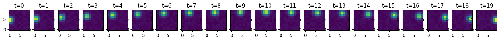
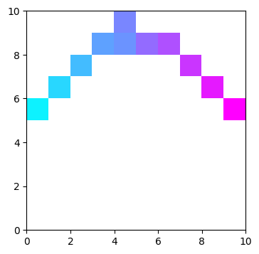
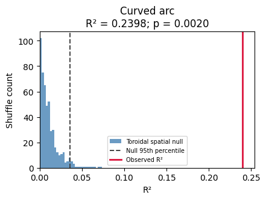
| observed_r2 | null_95th_percentile | p_value | n_shuffles | |
|---|---|---|---|---|
| simulation | ||||
| Curved arc | 0.239764 | 0.035767 | 0.001996 | 500 |
4.2 Repeated jumps between locations¶
Repeated back-and-forth jumps produce little net linear progression in this example, despite concentrated spatial probability. Other discontinuous paths can have substantial R². Neither R² nor a shuffle p-value alone establishes trajectory continuity.
weights = simulate_fragmented()
r2, x_traj, y_traj, slope_x, slope_y, mean_x, mean_y = weighted_regression_2d(weights)
print(f"R² : {r2:.4f} (linear fit across two clusters)")
print(f"slope_x : {slope_x:.4f}")
print(f"slope_y : {slope_y:.4f}")
helper_plot(weights)
npy.plotting.plot_2d_replay(weights)
plt.show()
null_summary = plot_r2_nulls({"Fragmented": weights})
display(null_summary)
R² : 0.0135 (linear fit across two clusters)
slope_x : 0.0561
slope_y : 0.0539
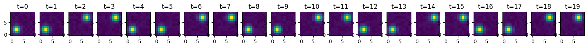
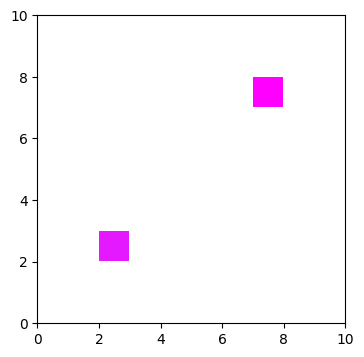
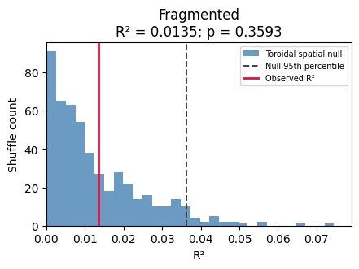
| observed_r2 | null_95th_percentile | p_value | n_shuffles | |
|---|---|---|---|---|
| simulation | ||||
| Fragmented | 0.013464 | 0.036332 | 0.359281 | 500 |
Interpretation¶
| Scenario | R² | Interpretation |
|---|---|---|
| Perfect localized line, any direction | 1 | All spatial variance explained |
| Stationary diffuse posterior | 0 | No linear temporal movement |
| Independent background noise | Usually small | No designed temporal sequence; assess the empirical p-value |
| Stationary point mass | NaN | Total spatial variance is zero |
| Broader posterior, same moving mean | Lower | Uncertainty contributes residual variance |
| Time reversal | Unchanged | Slopes change sign |
| Curved or reversing path | Often lower | A single constant-velocity line is incomplete |
| Fragmented path | Can be substantial | R² alone does not establish continuity |
NaNs contribute zero weight. Keep original timestamps when removing time bins; do not compress gaps. Negative and infinite weights are invalid. R² is undefined for zero total weight or zero temporal or spatial variance. Compare event R² against an upper-tail shuffle distribution to assess significance. Selection of a suitable null is separate from regression fit.
Optional edge cases: movement confined to one axis¶
These checks place all probability on a single x row or y column. One spatial coordinate has zero variance; the moving coordinate still supports a well-defined regression. They complement the main direction comparisons.
Fixed x, movement in y¶
weights = simulate_degenerate_x()
r2, x_traj, y_traj, slope_x, slope_y, mean_x, mean_y = weighted_regression_2d(weights)
print(f"R² : {r2:.4f}")
print(f"slope_x : {slope_x:.3e} (expect ~0)")
print(f"slope_y : {slope_y:.4f}")
helper_plot(weights)
npy.plotting.plot_2d_replay(weights)
plt.show()
null_summary = plot_r2_nulls({"Y-only movement": weights})
display(null_summary)
R² : 0.7545
slope_x : -4.474e-17 (expect ~0)
slope_y : 0.4099
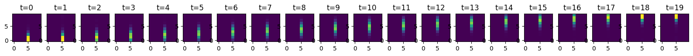

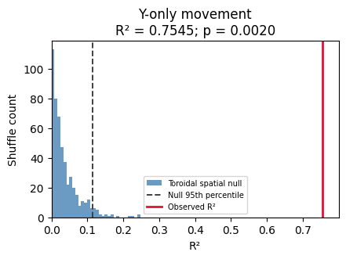
| observed_r2 | null_95th_percentile | p_value | n_shuffles | |
|---|---|---|---|---|
| simulation | ||||
| Y-only movement | 0.754473 | 0.114447 | 0.001996 | 500 |
Fixed y, movement in x¶
weights = simulate_degenerate_y()
r2, x_traj, y_traj, slope_x, slope_y, mean_x, mean_y = weighted_regression_2d(weights)
print(f"R² : {r2:.4f}")
print(f"slope_x : {slope_x:.4f}")
print(f"slope_y : {slope_y:.3e} (expect ~0)")
helper_plot(weights)
npy.plotting.plot_2d_replay(weights)
plt.show()
null_summary = plot_r2_nulls({"X-only movement": weights})
display(null_summary)
R² : 0.7545
slope_x : 0.4099
slope_y : -4.474e-17 (expect ~0)
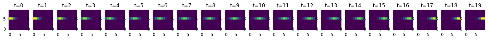

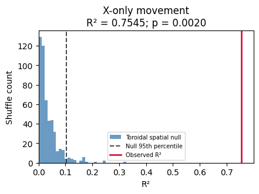
| observed_r2 | null_95th_percentile | p_value | n_shuffles | |
|---|---|---|---|---|
| simulation | ||||
| X-only movement | 0.754473 | 0.10342 | 0.001996 | 500 |
Warmed-up performance¶
The Numba kernel scans the posterior once, uses float64 accumulators, and allocates only small marginal arrays. It releases the GIL and avoids per-event parallel dispatch. Timing excludes first-call JIT compilation and includes the public wrapper and trajectory outputs. Measurements below are machine-specific, not an end-to-end replay runtime guarantee.
import timeit
benchmark_rows = []
for dtype in (np.float32, np.float64):
for layout in ("C", "F"):
p = np.random.default_rng(42).random((50, 50, 20)).astype(dtype)
p /= p.sum(axis=(0, 1), keepdims=True)
p = np.array(p, order=layout)
weighted_regression_2d(p) # compile/warm up this signature
seconds = (
min(timeit.repeat(lambda: weighted_regression_2d(p), number=1000, repeat=3))
/ 1000
)
benchmark_rows.append(
{
"dtype": np.dtype(dtype).name,
"layout": layout,
"µs/event": seconds * 1e6,
"events/s": 1 / seconds,
"seconds/10,000 events": seconds * 10000,
}
)
display(pd.DataFrame(benchmark_rows))
| dtype | layout | µs/event | events/s | seconds/10,000 events | |
|---|---|---|---|---|---|
| 0 | float32 | C | 154.7166 | 6463.430555 | 1.547166 |
| 1 | float32 | F | 120.9882 | 8265.268844 | 1.209882 |
| 2 | float64 | C | 132.6365 | 7539.402804 | 1.326365 |
| 3 | float64 | F | 118.2131 | 8459.299349 | 1.182131 |
Optional real data¶
Enable RUN_REAL_DATA and edit basepath for an available session. The synthetic examples above are self-contained.
RUN_REAL_DATA = True
if RUN_REAL_DATA:
# SET UP PARAMETERS FOR REAL DATA
MIN_RIP_DUR = 0.04 # minimum duration of ripple events to include in analysis (exclude short events that may reflect noise/artifacts)
MAX_RIP_DUR = 0.3 # maximum duration of ripple events to include in analysis (exclude long events that may reflect different phenomena)
N_ACTIVE_CELLS = 10 # minimum number of active cells in a ripple event to be included in analysis
POST_SLEEP_IDX = 3 # which post task is the example event in?
TASK_EPOCH = 2 # which post task is the example event in?
SPEED_THRES = 10 # running threshold to determine tuning curves
S_BINSIZE = 2 # spatial bins in tuning curve
TUNING_CURVE_SIGMA = 3
SLIDE_BY = 0.005
BIN_SIZE = 0.02
basepath = r"R:\data\latentseq\RM10\rm10_day6_20250810"
st, cm = npy.io.load_spikes(
basepath, brainRegion="CA1", putativeCellType="Pyr|Int", remove_unstable=True
)
# load position and compute speed
position = npy.io.load_animal_behavior(basepath)
pos = nel.AnalogSignalArray(
[position.x.values, position.y.values], timestamps=position.timestamps.values
)
speed = nel.utils.ddt_asa(pos, smooth=True, sigma=0.250, norm=True)
# load epochs and ripple events
epoch_df = npy.io.load_epoch(basepath)
beh_epochs = nel.EpochArray(epoch_df[["startTime", "stopTime"]].values)
ripples = npy.io.load_ripples_events(basepath, return_epoch_array=True)
# ripples are at least X seconds long
ripples = nel.EpochArray(
ripples.data[
(ripples.lengths >= MIN_RIP_DUR) & (ripples.lengths <= MAX_RIP_DUR)
],
)
# ripples have at least X active cells
bst = npy.process.count_in_interval(st.data, ripples.starts, ripples.stops)
ripples = nel.EpochArray(
ripples.data[(bst > 0).sum(axis=0) > N_ACTIVE_CELLS],
)
st, display(epoch_df)
| name | startTime | stopTime | environment | manipulation | behavioralParadigm | stimuli | notes | basepath | |
|---|---|---|---|---|---|---|---|---|---|
| 0 | rm10_probe_250810_092719 | 0.0000 | 452.65915 | cheeseboard | NaN | NaN | NaN | NaN | R:\data\latentseq\RM10\rm10_day6_20250810 |
| 1 | rm10_presleep_250810_094149 | 452.6592 | 6206.85435 | sleep | NaN | NaN | NaN | NaN | R:\data\latentseq\RM10\rm10_day6_20250810 |
| 2 | rm10_cheeseboard1_250810_112435 | 6206.8544 | 8223.35355 | cheeseboard | NaN | NaN | NaN | NaN | R:\data\latentseq\RM10\rm10_day6_20250810 |
| 3 | rm10_postsleep1_250810_120316 | 8223.3536 | 13941.93075 | sleep | NaN | NaN | NaN | NaN | R:\data\latentseq\RM10\rm10_day6_20250810 |
| 4 | rm10_cheeseboard2_250810_134434 | 13941.9308 | 16500.15795 | cheeseboard | NaN | NaN | NaN | NaN | R:\data\latentseq\RM10\rm10_day6_20250810 |
| 5 | rm10_postsleep2_250810_143203 | 16500.1580 | 22562.22515 | sleep | NaN | NaN | NaN | NaN | R:\data\latentseq\RM10\rm10_day6_20250810 |
compute spatial tuning curves¶
if RUN_REAL_DATA:
spatial_maps = npy.tuning.SpatialMap(
pos[beh_epochs[TASK_EPOCH]],
st[beh_epochs[TASK_EPOCH]],
s_binsize=S_BINSIZE,
speed=speed,
speed_thres=SPEED_THRES,
tuning_curve_sigma=TUNING_CURVE_SIGMA,
)
decode and score replays¶
- Note: This real-data section does not perform shuffling; this is just to demonstrate the function on real data. In practice you would want to compare these scores to a shuffle distribution to determine significance.
if RUN_REAL_DATA:
def jump_distance(posterior):
# if single time bin return nan
if posterior.shape[2] == 1:
return np.nan, np.nan
com = npy.ensemble.position_estimator(
posterior.T,
np.arange(posterior.shape[1]),
np.arange(posterior.shape[0]),
method="com",
)
# get spatial diff over time bins
x_diff = np.diff(com[:, 0])
y_diff = np.diff(com[:, 1])
delta = np.sqrt(x_diff**2 + y_diff**2)
max_jump = np.max(np.abs(delta))
jump = np.sum(np.abs(delta)) / len(delta)
return max_jump, jump
# replays from task
current_replays = ripples[beh_epochs[TASK_EPOCH]]
bin_edges = npy.process.intervals.get_overlapping_intervals(
current_replays.start - BIN_SIZE,
current_replays.stop + BIN_SIZE,
BIN_SIZE,
SLIDE_BY,
)
bin_centers = np.mean(bin_edges, axis=1)
bst = npy.process.count_in_interval(
st.data,
bin_edges[:, 0],
bin_edges[:, 1],
)
# find which bin belongs to which ripple
within_ripple_idx, within_ripple_ind = npy.process.in_intervals(
bin_centers, current_replays.data, return_interval=True
)
ripple_index = within_ripple_ind[within_ripple_idx]
unique_ripples = np.unique(ripple_index).astype(int)
# remake current_replays in case of non unique ripples
current_replays = nel.EpochArray(current_replays.data[unique_ripples, :])
# decode replays
posterior_prob = npy.ensemble.decoding.bayesian.decode_with_prior_fallback(
bst[:, within_ripple_idx].T,
spatial_maps.ratemap.T,
spatial_maps.occupancy.T,
BIN_SIZE,
uniform_prior=True,
).T
good_time_bins = np.sum(bst[:, within_ripple_idx], axis=0) > 0
max_jump = []
jump = []
regression_r2 = []
slope_x = []
slope_y = []
mean_x = []
mean_y = []
for rid in unique_ripples:
posterior_ripple = posterior_prob[:, :, ripple_index == rid]
current_ripple_idx = ripple_index == rid
max_jump_, jump_ = jump_distance(
posterior_ripple[..., good_time_bins[current_ripple_idx]]
)
(
r2_,
x_trajectory,
y_trajectory,
slope_x_,
slope_y_,
mean_x_,
mean_y_,
) = npy.ensemble.weighted_regression_2d(
posterior_ripple,
x_coords=spatial_maps.xbin_centers,
y_coords=spatial_maps.ybin_centers,
time_coords=np.arange(posterior_ripple.shape[2]) * SLIDE_BY,
)
max_jump.append(max_jump_)
jump.append(jump_)
regression_r2.append(r2_)
slope_x.append(slope_x_)
slope_y.append(slope_y_)
mean_x.append(mean_x_)
mean_y.append(mean_y_)
regression_r2 = np.array(regression_r2)
jump = np.array(jump) * S_BINSIZE
max_jump = np.array(max_jump) * S_BINSIZE
slope_x = np.array(slope_x)
slope_y = np.array(slope_y)
mean_x = np.array(mean_x)
mean_y = np.array(mean_y)
package into dataframe for later saving and analysis¶
if RUN_REAL_DATA:
potential_replays = pd.DataFrame()
potential_replays["ripple_index"] = unique_ripples
potential_replays["regression_r2"] = regression_r2
potential_replays["jump"] = jump
potential_replays["max_jump"] = max_jump
potential_replays["slope_x"] = slope_x
potential_replays["slope_y"] = slope_y
potential_replays["mean_x"] = mean_x
potential_replays["mean_y"] = mean_y
potential_replays.query("jump < 12").sort_values("regression_r2", ascending=False)
plot potential replays and fit lines¶
Titles report R² and jump distances in cm. The jump < 12 display filter
uses mean jump distance in cm; it is not a replay significance test.
if RUN_REAL_DATA:
from mpl_toolkits.axes_grid1.inset_locator import inset_axes
npy.plotting.set_plotting_defaults()
x, y = pos[beh_epochs[TASK_EPOCH]].data
fig, ax = plt.subplots(
5,
5,
figsize=npy.plotting.set_size("nature_double", fraction=1.5, ratio=1),
dpi=200,
)
ax = ax.flatten()
# Ripple IDs are labels, not positions in the compact score arrays.
results_by_ripple = potential_replays.set_index(
"ripple_index", verify_integrity=True
)
ripple_index_potential = (
potential_replays.query("jump < 12")
.sort_values("regression_r2", ascending=False)
.ripple_index.values
)
for i, rid in enumerate(ripple_index_potential[:25]):
event = results_by_ripple.loc[rid]
posterior_ripple = posterior_prob[:, :, ripple_index == rid]
ax[i].plot(x, y, color="k", alpha=0.25, zorder=2)
npy.plotting.plot_2d_replay(
posterior_ripple,
extent=[
spatial_maps.bins[0][0],
spatial_maps.bins[0][-1],
spatial_maps.bins[1][0],
spatial_maps.bins[1][-1],
],
saturation=5,
ax=ax[i],
)
# plot fit line
t = np.arange(posterior_ripple.shape[2], dtype=float) * SLIDE_BY
t_centered = t - t.mean()
x_fit = event["mean_x"] + event["slope_x"] * t_centered
y_fit = event["mean_y"] + event["slope_y"] * t_centered
ax[i].plot(x_fit, y_fit, color="cyan", lw=1.25, zorder=4)
ax[i].set_title(
f"R²: {event['regression_r2']:.2f}\n"
f"Mean jump: {event['jump']:.2f} cm\n"
f"Max jump: {event['max_jump']:.2f} cm",
fontsize=5,
)
# Colorbar
cmap = matplotlib.colormaps.get_cmap("cool").resampled(posterior_prob.shape[2])
norm = colors.Normalize(vmin=0, vmax=posterior_ripple.shape[2] * SLIDE_BY)
sm = mpl_cm.ScalarMappable(norm=norm, cmap=cmap)
sm.set_array([])
cax = inset_axes(
ax[i], width="30%", height="3%", loc="lower right", borderpad=2
)
cbar = plt.colorbar(sm, cax=cax, orientation="horizontal")
cax.xaxis.set_label_position("bottom")
cax.set_xlabel("Elapsed time (s)", fontsize=5, labelpad=2)
cbar.ax.tick_params(labelsize=4)
ax[i].axis("off")
for unused_ax in ax[min(25, len(ripple_index_potential)) :]:
unused_ax.set_visible(False)
plt.show()
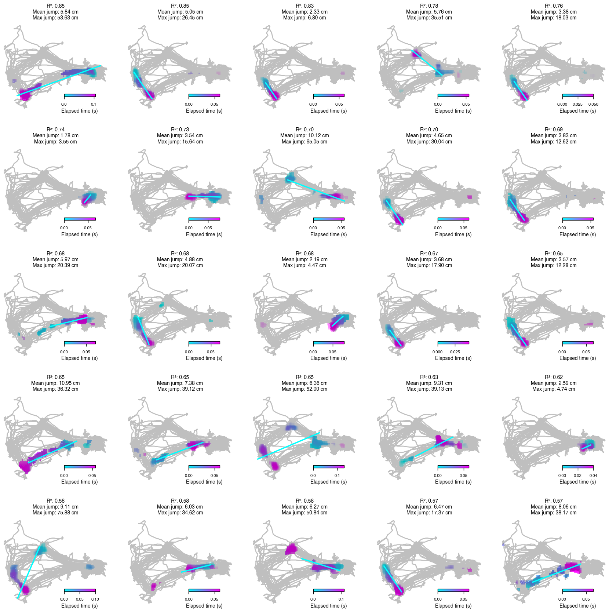